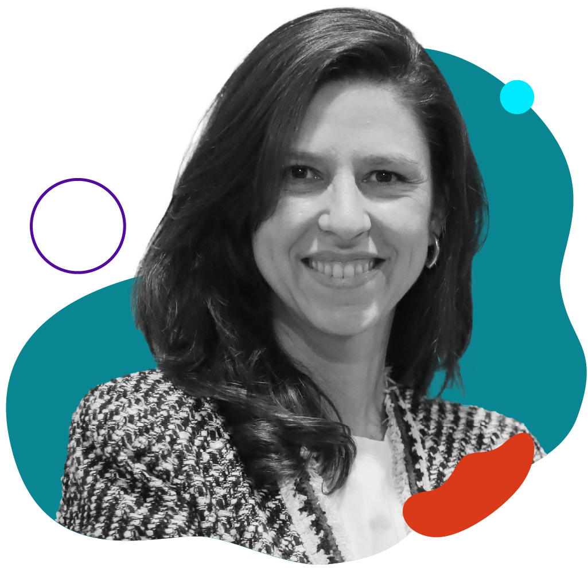
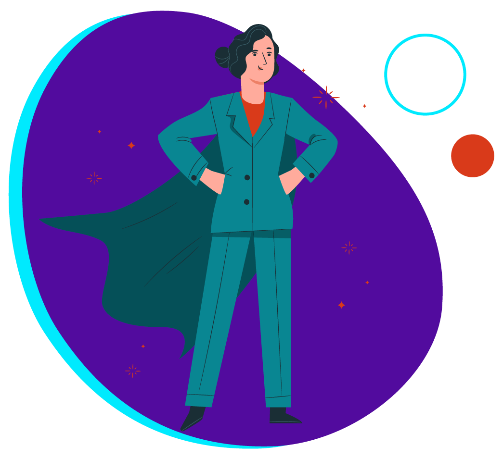
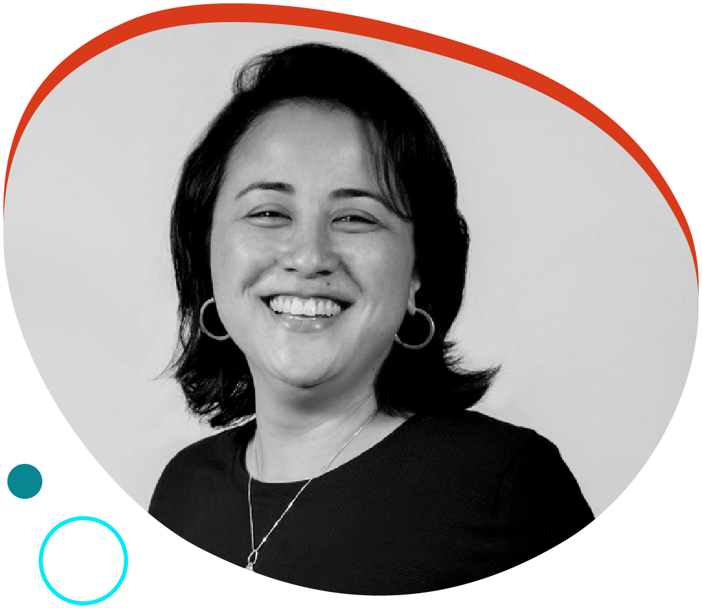
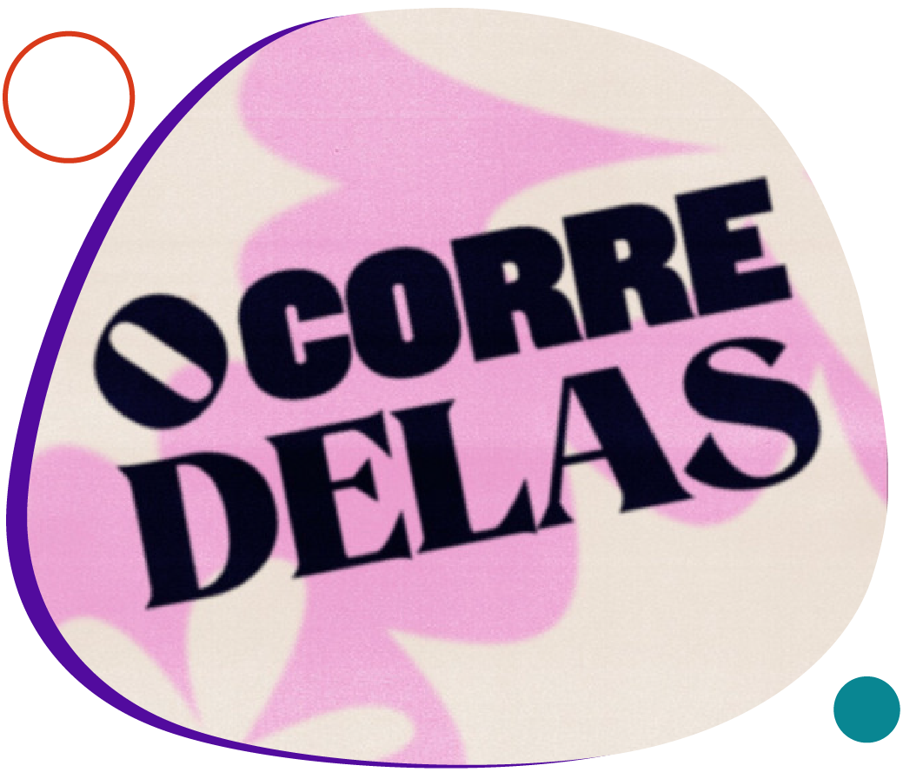
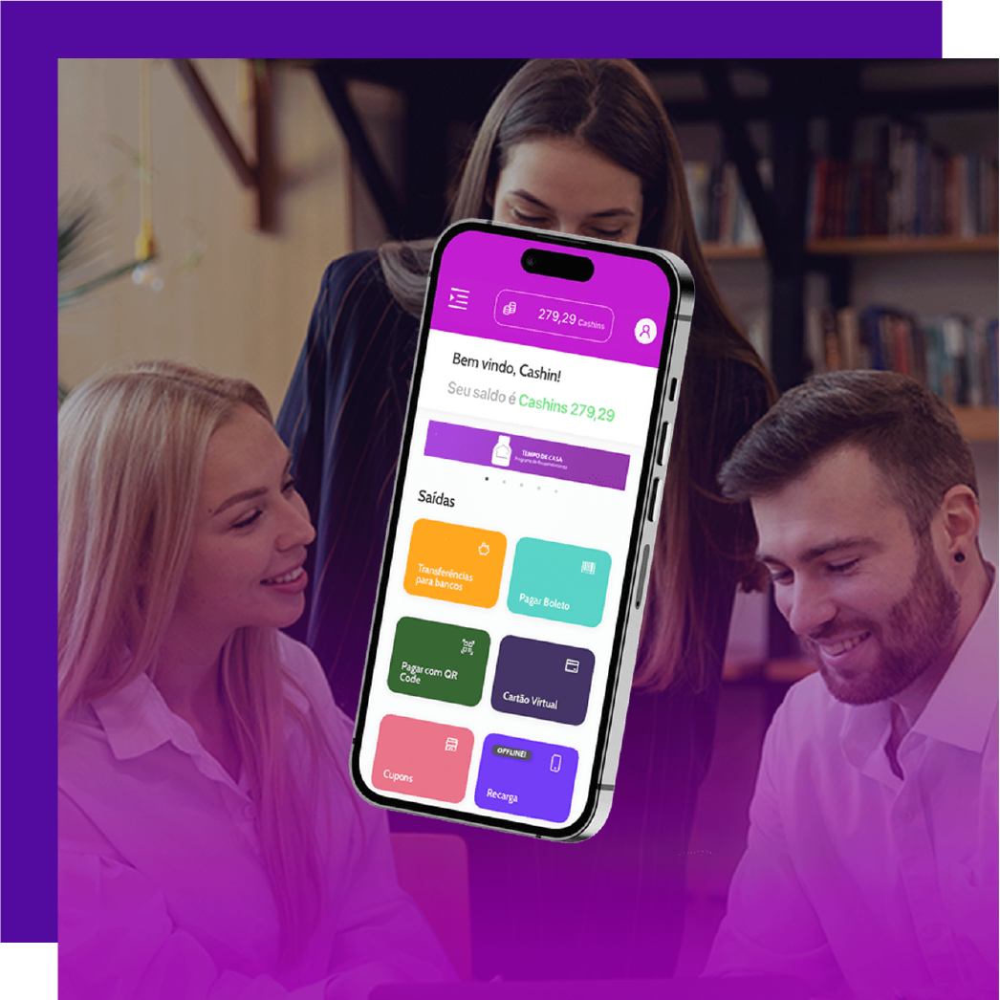
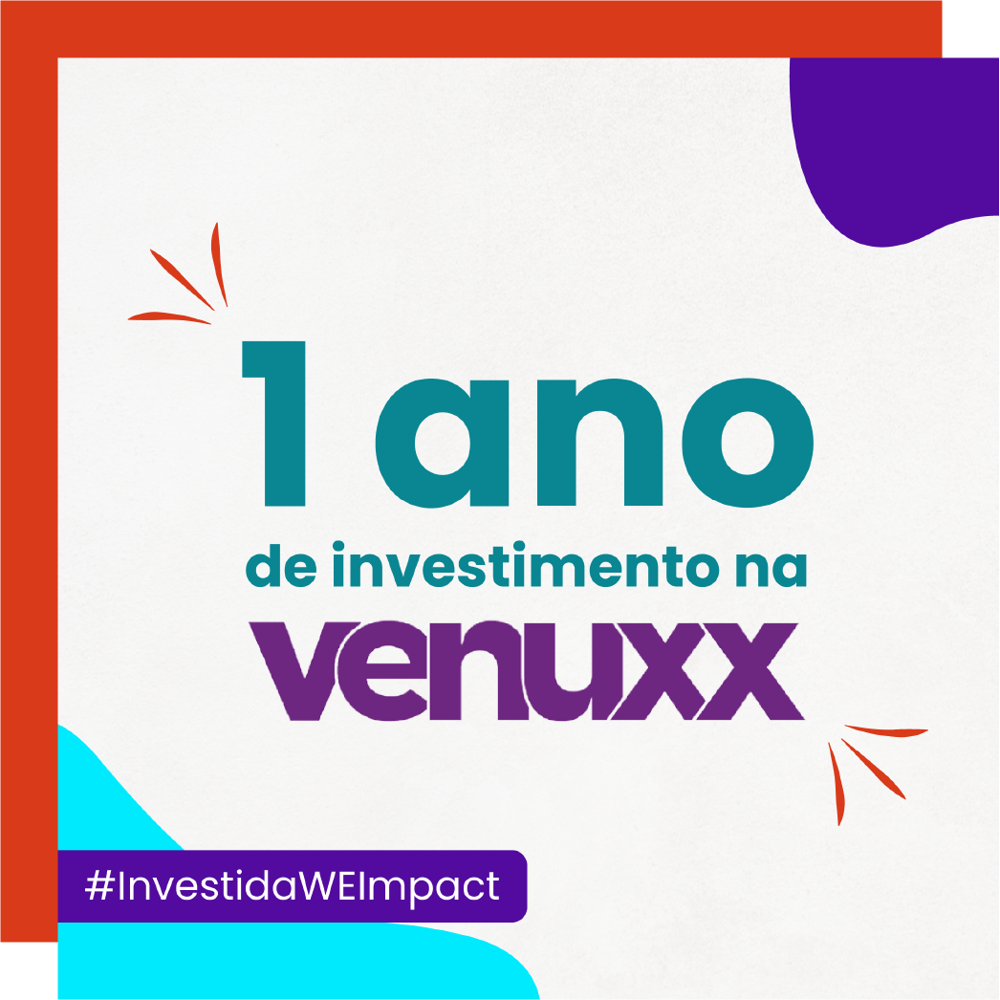

Não queremos ir para o spam! =) selecione este email como “confiável” ou mova-o para a Caixa de Entrada.
Transformação, conexão e novos negócios links de fundo bege na style= "color: #520b9e"!!!!!!!!!!
Achou que março não ia ser especial? Reserve o dia 7 na agenda! Para marcar o mês da mulher, teremos um grande evento: o WE Connect. O encontro vai conectar corporações, investidores e líderes de startups dispostas a promover equidade de gênero, diversidade & inclusão.
No evento, você vai poder participar de uma dinâmica para compartilhar experiências, aprender mais sobre vieses inconscientes no ecossistema de startups e investimentos e como lidar com as situações desagradáveis influenciadas por eles.
O grande destaque será ainda o lançamento oficial do Selo de Igualdade de Gênero, resultado da nossa parceria Match, para apoiar uma maior inclusão feminina no mercado de tecnologia e ajudar organizações a cumprirem suas metas de ESG.
Está aproveitando a leitura?
Que tal compartilhar essa edição da WE Impact News com outras empreendedoras e empreendedores da sua rede de contatos? 😉
#WIN – WE Impact Network
O que esperar da inovação aberta em 2023

Por Paula Puzzi, Corporate Venture Capital Manager na Suzano Ventures
Você sabe o que é essa tal de inovação aberta? No novo artigo do blog WE Impact, falamos sobre a definição, principais ferramentas para aplicá-la, quais os desafios e as oportunidades o novo ano irá gerar para essa estratégia, que vem sendo cada vez mais adotada pelas corporações que buscam – e precisam! - inovar.
Paula Puzzi, Corporate Venture Capital Manager na Suzano Ventures, é nossa entrevistada e explica como uma das principais fabricantes de papéis da América Latina utiliza a inovação aberta. Além disso, compartilha dicas para corporações que também desejam adotar esse modelo de colaboração.
título lista JSON
texto lista JSON
texto lista JSON
texto lista JSON
texto lista JSON
#DiversidadenaPrática
Elas no topo das maiores empresas dos EUA

Pela primeira vez na história, mais de 10% das empresas listadas na Fortune 500 têm CEOs mulheres.
Até então, o número se mantinha estável em 8%. O pequeno progresso deve ser comemorado! O aumento do número de mulheres na liderança de uma empresa tem o potencial de gerar um efeito cascata, aumentando o número de contratações de outras profissionais e gerando um ambiente mais inclusivo.
Com a liderança feminina deixando de ser um estigma, a promoção de outras mulheres se torna mais comum.
título lista JSON
texto lista JSON
texto lista JSON
#DicadaCEO

“Algumas coisas que deram certo para mim ao empreender em tecnologia: a leitura e a busca por conhecimento, principalmente no tocante a assuntos da área tech, ainda que eu seja de humanas; a participação em eventos, seja prestigiando, seja contribuindo, quando o assunto é empreendedorismo feminino também está na minha rotina. Afinal, preciso contribuir com outras mulheres, assim como tantas já contribuíram comigo. Conecte-se com quem já passou pelo caminho que você está trilhando!”
- Cris Miura, CEO e cofundadora da Pontue para o blog WE Impact LINKKKKKKKKKKKKKKK
#ElasImpactam

As diferentes faces da carreira
Os primeiros episódios de "O corre Delas" já estão no ar! Com a proposta de falar sobre carreira sem romantização, com os altos e baixos que toda trajetória tem, o podcast será apresentado por quem entende que essa jornada não é linear: a jornalista Luanda Vieira, que, após superar um burnout, passou por uma grande transformação de carreira.
Ela já recebeu a diretora de Diversidade & Inovação em Conteúdo Estúdios Globo, Samantha Almeida, em uma conversa sobre o presente e projeções para o futuro; e Adriana Barbosa, fundadora da Feira Preta, em um bate-papo sobre empreendedorismo negro.
Acesse o link e conheça esse novo projeto da Obvious:
texto lista JSON
texto lista JSON
texto lista JSON
texto lista JSON
#NaMídia

Após aporte, Cash.in movimenta R$ 90 mi e traça próximos passos
A A Cash.in, #investidaWEImpact, cresceu muito em 2022! Com mais de 120 clientes, incluindo empresas como Ambev, Arezzo, Nestlé e Melitta, a fintech ampliou em 3,6 vezes o valor movimentado em premiações em relação ao ano anterior. Confira o que as founders projetam para 2023!
#NasRedes

Perdeu esse conteúdo?
12 meses após receber nosso aporte, a Venuxx passou por um grande progresso, registrou crescimento no número de clientes e dobrou sua margem operacional. Agora, a jornada rumo ao sucesso continua nas mãos de uma nova liderança. Descubra quem é e confira a linha do tempo com a evolução completa da startup nas nossas redes.